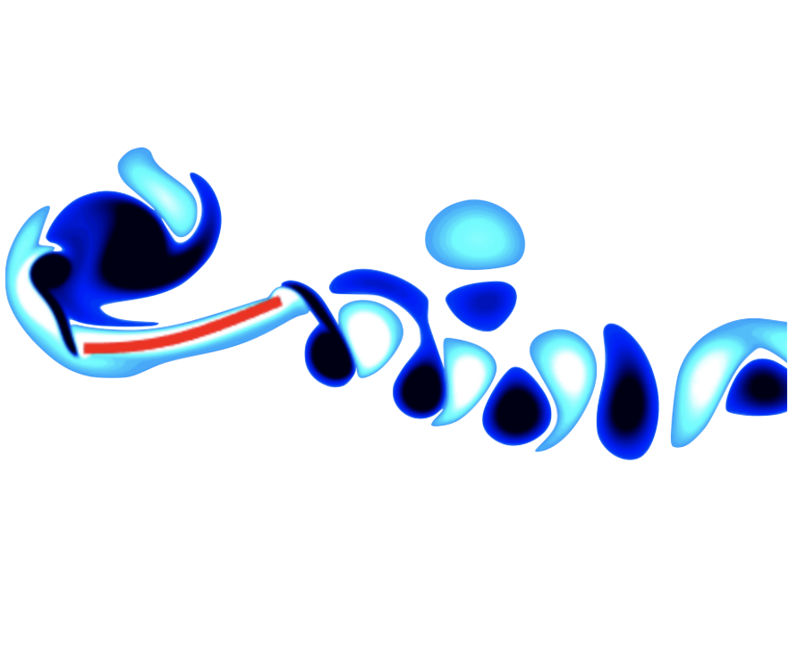

A. Goza, D. Floryan, and C. W. Rowley, under review
arXiv: 1908.05704
What makes the analysis of flexible swimmers tricky is the tight coupling between solid and fluid mechanics: the fluid forces deform the solid, which then experiences restorative elastic forces, which in turn alter the fluid motion. Certain effects are linear in nature, while others are necessarily nonlinear. We use high-fidelity simulations to delineate linear resonant effects from nonlinear finite-amplitude effects.
We investigate the role of resonance in finite-amplitude swimming of a flexible flat plate in a viscous fluid. The role of resonance in performance remains unclear for two reasons: i) a lack of definition of resonance for the fully-coupled fluid-structure interaction system in a viscous flow, and ii) the presence of nonlinear effects, which makes it difficult to disentangle resonant and non-resonant mechanisms in finite-amplitude swimming. We address point i) and provide an unambiguous definition for system resonance by computing global linear stability modes of the fully-coupled fluid-structure interaction system that account for the viscous fluid, the plate, and the coupling between them. We then resolve point ii) by considering high-fidelity nonlinear simulations of systematically increased amplitude. By comparing the results for different amplitudes with one another and with the linear stability modes, we separate linear and/or resonant effects from nonlinear and/or non-resonant effects. Resonant behavior is observed over a wide range of plate stiffnesses, with peaks in trailing-edge motion and thrust occurring near the resonant frequency defined by the global linear analysis. The peaks broaden and weaken with increasing heave amplitude, consistent with an increased damping effect from the fluid. At the same time, non-resonant mechanisms are present at large heave amplitudes. The input power exhibits qualitatively different dynamics at large heave amplitudes compared to smaller heave amplitudes, where resonance dominates. Moreover, leading-edge separation is present for stiff plates at large heave amplitudes, which can drastically alter the performance characteristics from what one would expect through linear predictions.